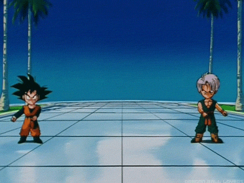

Pourquoi React est cool, et pourquoi vous ne devriez pas l'utiliser

Cozy Cloud
Au commencement était le Web
Website
vs
Webapps
Pourquoi ça change la donne ?
MV* Patterns 💪

Il est temps de passer à autre-chose
React : Back to the 80's
La patate chaude

State, Rendering, Ui
- état local et temporaire
- interne au composant de vue
- syntaxe spécifique (JSX,
onevents…) - composant sur-mesure
Virtual-rendering
Et la propagation ?
Flux !

L'arbre qui cache la forêt
- React ne constitue que la partie Vue (widgets)
- [Flux|Relay|GraphQl] en backend
- Virtual-rendering comme killer-feature
Une nouvelle façon de penser l'Ui ?
Ça vous plait ?
vous venez de réinventer Windows 3.1
Félicitations
Functionnal Programming
Késako?

Fonctionnel
- expression (functions) & évaluations
- structure en "pipe"
- immutable
map, filter, reduce…
Pourquoi ?
- plus structuré et plus souple
- plus lisible & maintenable
- plus cohérent (stateless / streams)
- minimise les effets de bord
Mokaÿÿÿ… c'est compliqué, donc ?
- c'est une autre façon de penser
- c'est pas plus compliqué qu'autre-chose
- vous connaissez déjà (
map,reduce…) - vous le pratiquez déjà le piping (coucou jQuery)
Reactive Programming
Wait… Wat‽
- totalement event-driven (observables)
- totalement async (events)
- totalement stateless (properties)
Functional Reactive Programming 💪

Boites à outils
A-la-React
React or not React ?
React
- n'est pas Reactive
- nécessite une structure backend solide
- offre une bonne abstraction de l'Ui
- offre une porte d'entrée cross-platforms (learn once, code everywhere)
Webapps modernes ?
L'heure du choix
- websites ⇨jQuery / VanillaJS
- webapps simples ⇨ framework MV / Solution lightweight (Riot, VueJS…)
- app cross-platform / isomorphes ⇨ React
- app à fortes interactions ⇨ FRP
Questions ?
Merci
Iconographie / Médias :
- Flux diagram : by Facebook
{kind=link}
Fontes :
- Titrage : Sinzano
- Labeur : Overlock
- Monospace : Source Code Pro
//talks.m4dz.net/react-or-not-react/
disponible sous licence CC BY-SA 4.0
Transcript disponible sur OpenWeb : React or not React?